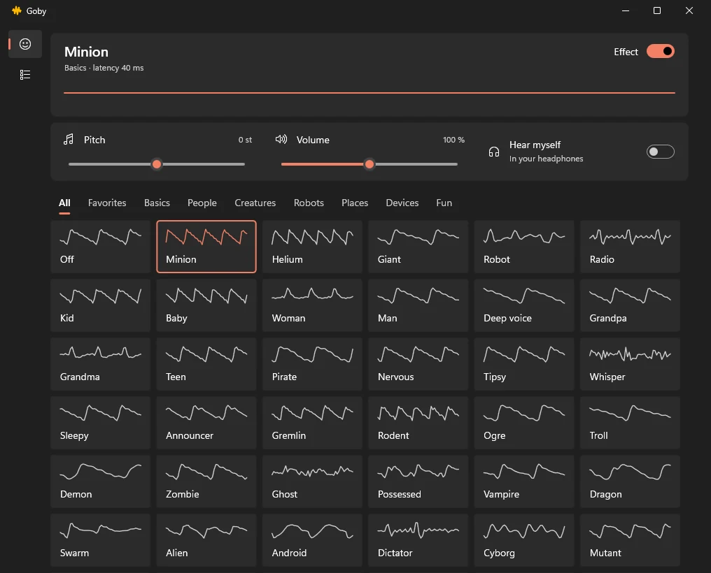

Talk like anyone else.
61 voices for CS2, Discord, OBS or any program you pick, from one 500 KB Windows app. Free, open source, no account.

Every voice is drawn the way it sounds.
The same test tone run through each recipe, exactly as the app's tiles show it. Pitch it up or down, mix in your own voice, and save the result as a voice of your own.
Basics
- Off
- Minion
- Helium
- Giant
- Robot
- Radio
People
- Kid
- Baby
- Woman
- Man
- Deep voice
- Grandpa
- Grandma
- Teen
- Pirate
- Nervous
- Tipsy
- Whisper
- Sleepy
- Announcer
Creatures
- Gremlin
- Rodent
- Ogre
- Troll
- Demon
- Zombie
- Ghost
- Possessed
- Vampire
- Dragon
- Swarm
- Alien
Robots
- Android
- Dictator
- Cyborg
- Mutant
- 8-bit
- Synth choir
- Hologram
- Spaceship
Places
- Cave
- Cathedral
- Bathroom
- Stadium
- Underwater
- Canyon
- Tin can
Devices
- Phone
- Megaphone
- Walkie-talkie
- Old radio
- Drive-thru
- Cassette
Fun
- Squeaky choir
- Opera
- Choir
- Karaoke
- Glitch
- Duet
- Jet
- Squeaky robot
Three minutes from download to the game.
Get Goby
One file. Choose Install Goby, or Just run it to try it without installing. No administrator rights, no account.
Add the cable
Goby reaches other programs through the free VB-Audio Virtual Cable. Without it, Goby walks you through installing it and picks it up without a restart.
Pick the programs
On Programs, press + next to CS2, Discord or OBS. Only they hear the voice; everything else keeps your real microphone. A program with its own microphone setting, like Telegram, needs it on Default once, and Goby tells you when.

About 28 ms from your mouth to the game. Under 0.4 % of one core for the heaviest voice. Updates only from signed releases. Nothing sent anywhere else.
Made for playing.
- CtrlAltGeffect on and off, inside the game
- CtrlAltPgUpprevious voice
- CtrlAltPgDnnext voice
Star the voices you use and the hotkeys and the tray menu cycle only those. Close the window and Goby keeps going in the tray; it starts with Windows only if you ask it to.

Questions
Will an anti-cheat mind it?
Goby never touches the game: it does not inject anything or read its memory. The game only sees one more microphone, made by VB-Audio's ordinary signed driver.
Can other programs still use my microphone?
Yes, Goby shares it. Low latency under Settings > Advanced takes it exclusively for about 14 ms less delay, and then nothing else can record from it while Goby runs.
How do I know my copy is the real one?
Every release lists the SHA-256 of each file in SHA256SUMS.txt; compare it with Get-FileHash in PowerShell. Goby's own updater installs only releases signed with the author's key. Settings shows the version and the commit a copy says it was built from.
Why does it need VB-Cable?
A program can only record from a microphone Windows knows about. VB-Cable is that microphone; Goby plays into it. Writing a driver of its own would mean a kernel component on your machine, and Goby would rather not.
Mac or Linux?
No. Goby is built on Windows audio and the Windows UI, which is a large part of why it is small and fast.